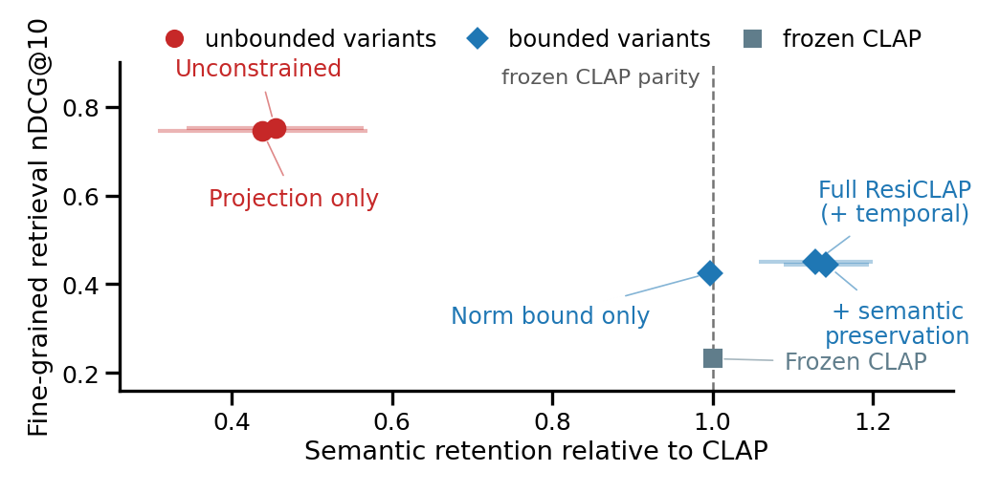
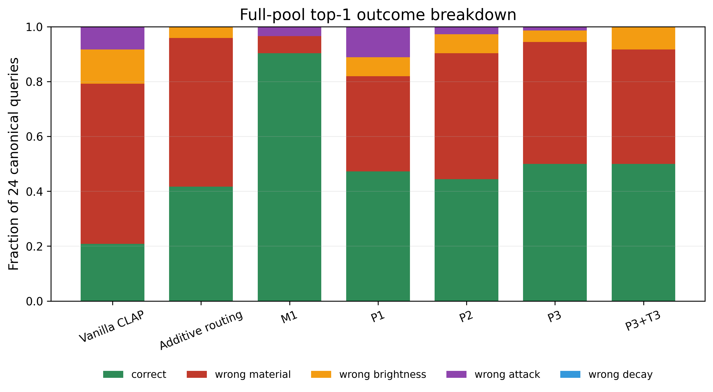

Results
Two questions drive the evaluation: does bounding the residual actually preserve CLAP, and does the improvement survive outside the conditions it was trained on?
Does the bound matter?
The ablation walks from an unconstrained residual to the full model. It separates two mechanisms that are easy to conflate: removing the component parallel to the frozen embedding (orthogonal projection), and limiting the residual's magnitude (the norm bound).
| Configuration | Fine-grained R@1 | Fine-grained nDCG@10 | Clotho R@1 | FSD50K R@1 |
|---|---|---|---|---|
| Unconstrained residual | 0.903 | 0.752 | 0.110 | 0.212 |
| Orthogonal projection only | 0.875 | 0.745 | 0.098 | 0.213 |
| Norm bound only | 0.472 | 0.425 | 0.315 | 0.378 |
| + semantic preservation | 0.500 | 0.444 | 0.348 | 0.448 |
| ResiCLAP (full, + temporal) | 0.500 | 0.450 | 0.338 | 0.450 |
Frozen CLAP reference: 0.208 / 0.232 / 0.320 / 0.375.

An unconstrained residual reaches the best fine-grained score of all (0.752) but collapses broad retrieval to 34% and 56% of CLAP's Clotho and FSD50K performance. Orthogonal projection alone barely helps — 0.745 nDCG@10 with only 31% Clotho retention. Adding the norm bound changes the picture completely: fine-grained nDCG@10 stays well above frozen CLAP while broad retrieval returns to its original level. Residual magnitude, not orthogonal projection, is the mechanism that preserves CLAP's semantic structure.
Does it generalise?
Three settings test progressively harder transfer: unseen physical objects, unseen recording contributors, and entirely unseen sound categories.

| Setting | Queries | Result |
|---|---|---|
| Unseen objects (5 RealImpact splits) | 120 | ResiCLAP beats both baselines in all five splits; gains vary by material from +0.012 to +0.267 nDCG@10. |
| Unseen contributors (FSD50K) | 1,250 | Beats two-stage scoring in all five splits and 39 of 51 categories. Strongest for attack (+0.058) and brightness (+0.042); decay is flat (−0.003). |
| Unseen categories (FSD50K) | 266 | Still beats frozen CLAP, but falls below two-stage scoring in every split. |
An honest limitation. When the sound category itself is new, explicit property scoring wins. It measures properties directly and so depends less on category structure seen during training. ResiCLAP transfers well to new examples and new recording conditions within familiar categories, but not yet to unfamiliar ones. Note also that the two-stage baseline consumes the same signal measurements that define the ground truth, which makes it a demanding, measurement-privileged comparison.
Where the errors go

Reproducibility
All reported numbers are means over three training seeds (7, 17, 27) with frozen, cached CLAP features, so the evaluation is deterministic given the checkpoints. Confidence intervals are bootstrap intervals resampled over queries, and additionally over materials or categories where the grouping is meaningful.